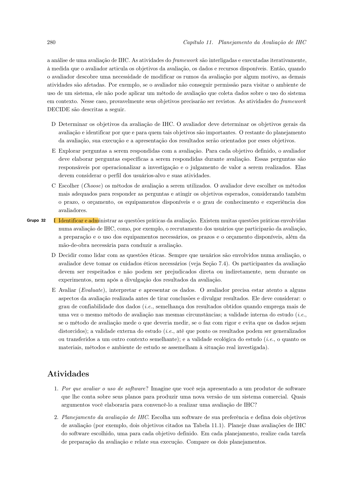

Planejamento da Avaliação da Análise de Tarefas (Framework DECIDE)
Tabela de Contribuição
A distribuição de responsabilidades na concepção metodológica, desdobramento dos objetivos e estruturação deste planejamento encontra-se detalhada na Tabela 1.
Tabela 1 — Matriz de Contribuição e Transparência de IA Generativa
| Integrante | Atribuição no Artefato | Data | Horário | Ferramenta de IA | Propósito do Uso de IA |
|---|---|---|---|---|---|
| Vinicius Silva Araruna | Concepção metodológica, fundamentação do Framework DECIDE (Barbosa & Silva, 2021), elaboração das perguntas investigativas da Tarefa 1 (HTA/Markdown), script oral do TCLE e checklist | 12/10/2026 | 02:00 - 03:30 | Claude / Gemini | Apoio na organização sintática de tabelas Markdown e padronização visual. |
| Gustavo Antonio Rodrigues e Silva | Perguntas investigativas da Tarefa 2 (Cadastro e Onboarding com Discobot / Trust Levels), planejamento prático de sessões e revisão por pares | 12/10/2026 | 03:30 - 04:00 | Nenhuma | Auditoria humana cruzada dos critérios e adequação ao fluxo do novo usuário. |
| Edvaldo Soares Brasileiro Filho | Perguntas investigativas da Tarefa 3 (Busca Avançada e Filtros Facetados), matriz de discrepâncias de HTA e revisão ética | 12/10/2026 | 04:00 - 04:30 | Nenhuma | Verificação da rastreabilidade das questões de busca e conformidade do TCLE. |
Fonte: Elaborada pelos autores, 2026.
1. Introdução
No Ciclo de Vida de Engenharia de Usabilidade preconizado por Mayhew (1999) e consolidado por Barbosa e Silva (2021, p. 115), a fase de Design, Avaliação e Desenvolvimento contempla a realização de avaliações formativas em estágios iniciais de concepção. No Nível 1, avaliam-se as modelagens conceituais preliminares antes da construção de protótipos de telas, assegurando que o entendimento da equipe sobre as necessidades do usuário esteja alinhado com o seu comportamento fático.
A Análise de Tarefas (representada pela Análise Hierárquica de Tarefas — HTA e modelos GOMS/CTT) constitui uma abordagem analítica que descreve como as pessoas realizam suas atividades em um sistema interativo em termos de objetivos, subobjetivos, operações e planos de execução (Annett & Duncan, 1967; Card, Moran & Newell, 1983; Barbosa & Silva, 2021). Contudo, por se tratar de uma modelagem inicialmente prescritiva, é indispensável confrontá-la empiricamente com usuários reais para verificar se os passos elementares e os caminhos de decisão modelados espelham a prática autêntica dos estudantes.
O presente documento estabelece o planejamento detalhado para a avaliação das três tarefas centrais do Fórum Diolinux Plus modeladas na Etapa 2, orientando-se estritamente para o papel de Estudante / Usuário Aprendiz (iniciante ou intermediário em Linux):
- Tarefa 1: Criação e Publicação de Tópico de Dúvida Técnica com Tags e Markdown (autor: Vinicius Silva Araruna);
- Tarefa 2: Cadastro e Onboarding do Novo Usuário com Discobot e Níveis de Confiança — Trust Levels (autor: Gustavo Antonio);
- Tarefa 3: Busca Avançada e Filtros Facetados de Categoria e Distribuição Linux (autor: Edvaldo Soares).
2. Fundamentação Teórica: O Framework DECIDE em IHC
Para assegurar validade científica e rigor metodológico, a avaliação da análise de tarefas foi estruturada no Framework DECIDE, desenvolvido por Preece, Rogers e Sharp (2002) e aprofundado por Rogers, Sharp e Preece (2013) e Barbosa e Silva (2021, Cap. 11, pp. 279–281).
O framework estrutura a condução da avaliação em seis etapas sequenciais interligadas:
- D — Determinar (Determine): Fixar os objetivos gerais da avaliação de IHC e os impactos pretendidos no projeto;
- E — Explorar (Explore): Desdobrar os objetivos gerais em questões investigativas objetivas e verificáveis;
- C — Escolher (Choose): Selecionar métodos de avaliação compatíveis com a natureza conceitual das tarefas;
- I — Identificar (Identify): Administrar questões práticas (recrutamento de participantes, infraestrutura, ferramentas e cronograma);
- D — Decidir (Decide): Estabelecer salvaguardas bioéticas e legais (TCLE, LGPD e script oral de consentimento);
- E — Avaliar (Evaluate): Definir previamente procedimentos de interpretação e consolidação dos achados para subsidiar o redesign da interface.
Autor do Item Teórico: Vinicius Silva Araruna
(Referencial teórico canônico fundamentado em Rogers, Sharp & Preece, 2013 e Barbosa & Silva, 2021, p. 280).
A Figura 1 comprova a fundamentação teórica do Framework DECIDE na literatura canônica de IHC.

Figura 1 — Trecho da literatura canônica de IHC detalhando as etapas do Framework DECIDE.
Fonte: Barbosa e Silva (2021, p. 280).
A Figura 2 ilustra o fluxo de trabalho operacional do DECIDE adaptado à avaliação da Análise de Tarefas.
graph TD
classDef step fill:#FFFFFF,stroke:#0F172A,stroke-width:2px,color:#0F172A;
classDef ethical fill:#FEF3C7,stroke:#D97706,stroke-width:2px,color:#78350F;
classDef eval fill:#F1F5F9,stroke:#334155,stroke-width:2px,color:#0F172A;
D1["D — Determinar Objetivos Gerais (Conferência de Tarefas)"]:::step
E1["E — Explorar Perguntas Investigativas (Desdobramento HTA)"]:::step
C1["C — Escolher Métodos (Entrevista + Percurso de Tarefas)"]:::step
I1["I — Identificar Questões Práticas (Recrutamento e Cronograma)"]:::step
D2["D — Decidir Questões Éticas (TCLE e Script Oral Literal)"]:::ethical
E2["E — Avaliar, Interpretar e Apresentar Dados (Matriz de Discrepâncias)"]:::eval
D1 --> E1
E1 --> C1
C1 --> I1
I1 --> D2
D2 --> E2Figura 2 — Fluxo das etapas do Framework DECIDE aplicado à avaliação da Análise de Tarefas.
Fonte: Elaborada pelos autores com base em Barbosa e Silva (2021), 2026.
3. D — Determinar os Objetivos da Avaliação da Análise de Tarefas
A avaliação formativa dos modelos de tarefas tem como finalidade contrastar a decomposição hierárquica construída pelos pesquisadores com o fluxo de raciocínio autêntico do usuário. Em consonância com Barbosa e Silva (2021, p. 281), foram estabelecidos quatro objetivos gerais:
- Validar a Completude e Acurácia dos Passos Operacionais: Averiguar se todos os subobjetivos e operações elementares modelados nas Tarefas 1, 2 e 3 correspondem integralmente às ações necessárias para o alcance do objetivo final;
- Identificar se os Planos de Execução Hierárquicos são Naturais: Avaliar se as regras lógicas e condicionais (sequência ordenada, seleção alternativa ou repetição) espelham a ordem espontânea de tomada de decisão do estudante;
- Mapear Lacunas Operacionais e Gargalos Cognitivos: Descobrir etapas omitidas no modelo prescritivo, pontos de sobrecarga de memória de trabalho ou etapas da interface que induzem a erros recorrentes;
- Subsidiar a Prototipação com Recomendações de Automação: Identificar operações redundantes ou complexas na HTA que possam ser simplificadas, automatizadas ou aceleradas na futura interface do sistema.
4. E — Explorar as Perguntas Investigativas
A Tabela 2 apresenta o desdobramento dos objetivos em perguntas investigativas específicas, distribuídas entre as três tarefas prioritárias do fórum para guiar a condução da sessão pelo entrevistador.
Tabela 2 — Matriz de perguntas investigativas para avaliação da Análise de Tarefas
| Tarefa / Escopo | Nº | Pergunta Investigativa Específica | Foco de Observação e Critério de Sucesso |
|---|---|---|---|
| Tarefa 1: Publicação com Tags e Markdown | PT01 | Ao precisar tirar uma dúvida técnica sobre Linux, você costuma redigir o corpo da dúvida antes ou depois de escolher a categoria e as tags? | Avaliar se a ordem sequencial do Plano 0 da HTA (título → categoria → tags → redação) reflete o fluxo espontâneo do usuário. |
| Tarefa 1: Publicação com Tags e Markdown | PT02 | Quando você cola um comando ou log extenso do terminal, você utiliza a barra de ferramentas do editor ou atalhos de Markdown (como crases triplas)? | Confrontar os métodos alternativos modelados no CMN-GOMS e verificar o grau de conhecimento sobre blocos de código cercados. |
| Tarefa 1: Publicação com Tags e Markdown | PT03 | O painel lateral de sugestão de tópicos semelhantes durante a digitação do título é útil ou interfere na sua concentração? | Avaliar a operação 2.2 da HTA e a receptividade do estudante frente aos mecanismos de desduplicação do Discourse. |
| Tarefa 2: Cadastro e Onboarding Discobot | PT04 | Após criar a conta e ativá-la por e-mail, você prefere explorar o fórum imediatamente ou realizar o tutorial guiado do robô de boas-vindas? | Validar o ramo de escolha alternativa modelado na HTA (Operação 4.2 vs. 4.3) e no operador de escolha [] do CTT. |
| Tarefa 2: Cadastro e Onboarding Discobot | PT05 | Você consideraria aceitável ter o upload de imagens e anexos bloqueado nas primeiras 24 horas após criar a conta? | Avaliar a percepção do estudante sobre as restrições antispam de Trust Level 0 (TL0) dissecadas na Análise Documental. |
| Tarefa 3: Busca Avançada e Filtros | PT06 | Ao buscar solução para uma falha no Linux (ex.: problema de Wi-Fi), quais informações você busca primeiro na listagem de resultados? | Verificar a relevância atribuída a títulos, tags, data de postagem e ao badge de 'Solução Aceita' na HTA. |
| Tarefa 3: Busca Avançada e Filtros | PT07 | Se a busca retornar muitos resultados genéricos, você costuma refinar os termos ou utilizar filtros de categoria e distribuição? | Avaliar a decisão de transição entre o Método de Busca Direta e o Método de Filtros Facetados no modelo GOMS. |
| Geral / Modelo Mental | PT08 | Há alguma etapa no fluxo de realização dessas tarefas que parece desnecessária, confusa ou que está faltando? | Identificar operações atômicas ausentes na modelagem hierárquica ou passos que violam expectativas de usabilidade. |
Fonte: Elaborada pelos autores com base em Barbosa e Silva (2021), 2026.
A Tabela 2 orienta a inquirição sobre a representação da HTA, permitindo confrontar a engenharia cognitiva da equipe com a realidade de campo.
5. C — Escolher os Métodos de Avaliação
Para a avaliação de Nível 1 da Análise de Tarefas, a equipe adotou a combinação entre Entrevista Semiestruturada e o método de Percurso Conceitual Guiado de Tarefas (Task Walkthrough) apoiado na técnica de verbalização concomitante adaptada (Think Aloud), conforme Barbosa e Silva (2021, p. 144) e Mayhew (1999).
Justificativa da Escolha Metodológica
- Inspeção Procedural Passo a Passo: O percurso conceitual permite que o entrevistador apresente cada subobjetivo e operação da HTA em sequência, solicitando que o estudante verbalize seu modelo mental e confirme se aquela é a forma mais lógica de agir;
- Identificação de Alternativas Ocultas: A entrevista semiestruturada permite investigar por que o participante escolheria um caminho alternativo não previsto no plano de execução original;
- Economia de Recursos: Método formativo de execução rápida e alta densidade qualitativa, viabilizando correções estruturais antes da prototipação interativa.
6. I — Identificar e Administrar as Questões Práticas
6.1 Perfil e Recrutamento dos Participantes
- Público-Alvo: Estudantes universitários de cursos de tecnologia (Engenharia de Software, Ciência da Computação, Engenharia de Redes ou correlatos);
- Perfil de Experiência: Usuários iniciantes ou intermediários em distribuições Linux e ferramentas colaborativas;
- Amostragem: Recrutamento de 2 a 3 participantes voluntários sem contato prévio com a equipe de engenharia do projeto;
- Critério de Inclusão: Estar cursando graduação em computação ou tecnologia e já ter enfrentado dúvidas de terminal ou configuração no ecossistema Linux.
6.2 Infraestrutura Tecnológica e Ferramentas
- Ambiente: Sessões síncronas remotas no Google Meet;
- Visualização de Artefatos: Compartilhamento de tela exibindo os diagramas HTA em tema claro e as tabelas analíticas de decomposição em alta resolução;
- Instrumentos de Registro: Gravação audiovisual em 1080p autorizada verbalmente nos primeiros 60 segundos, combinada com notas de observação tomadas em tempo real.
6.3 Cronograma Planejado das Sessões Integradas
A Tabela 3 apresenta a distribuição das sessões de avaliação da análise de tarefas. Em cada sessão de entrevista de 40 minutos, a Análise de Tarefas é conduzida imediatamente após a validação do Storyboard (Bloco 2 — 15 a 20 min), permitindo ao participante avaliar a estrutura dos planos lógicos e a decomposição operacional após já ter compreendido a narrativa e a ambientação geral da funcionalidade.
Tabela 3 — Cronograma planejado das sessões de avaliação da Análise de Tarefas
| Sessão / Etapa | Data | Horário | Entrevistador Principal | Observador / Anotador | Participante Convidado / Papel |
|---|---|---|---|---|---|
| Teste-Piloto | 17/10/2026 | 14:00 - 14:40 | Vinicius Silva Araruna | Gustavo Antonio | Colega discente de TI (Simulação de Ensaio) |
| ST01 | 19/10/2026 | 14:00 - 14:40 | Vinicius Silva Araruna | Gustavo Antonio | Participante 1 (P1 — Estudante de Graduação) |
| ST02 | 20/10/2026 | 15:00 - 15:40 | Gustavo Antonio | Vinicius Silva Araruna | Participante 2 (P2 — Estudante de Graduação) |
| ST03 | 21/10/2026 | 16:00 - 16:40 | Edvaldo Soares | Vinicius Silva Araruna | Participante 3 (P3 — Estudante de Graduação) |
| ST04 (Reserva) | 22/10/2026 | 14:00 - 14:40 | Vinicius Silva Araruna | Edvaldo Soares | Participante 4 (P4 — Estudante de Graduação) |
Fonte: Elaborada pelos autores, 2026.
6.4 Papel do Teste-Piloto de Nível 1
Em consonância com as boas práticas metodológicas de avaliação em IHC (Barbosa & Silva, 2021):
O teste-piloto destina-se exclusivamente a testar e aprimorar o planejamento da avaliação (temporização das perguntas, inteligibilidade do roteiro de tarefas, áudio, compartilhamento de tela e leitura do TCLE). O teste-piloto NUNCA avalia a interface ou o usuário, e seus dados não são computados nos resultados finais da avaliação.
O teste-piloto será conduzido no dia 17/10/2026 às 14:00 com um discente voluntário simulando o papel de participante para calibrar o roteiro de tarefas e o compartilhamento de tela dos diagramas HTA.
7. D — Decidir como Lidar com as Questões Éticas
A avaliação segue rigorosamente a Resolução CNS nº 510/2016, a LGPD (Lei nº 13.709/2018) e os 4 Princípios Bioéticos de Beauchamp e Childress (1979/2013):
- Autonomia: Voluntariedade plena, com direito de revogação a qualquer momento sem penalidades;
- Beneficência: Contribuição direta para o aprimoramento da usabilidade e do suporte à comunidade de software livre;
- Não-Maleficência: Garantia de ausência de julgamento ou desconforto frente a eventuais hesitações na análise dos diagramas;
- Justiça: Respeito à igualdade de tratamento e confidencialidade irrestrita das opiniões manifestadas.
Script Oral Padronizado de Leitura do TCLE (Primeiros 60 Segundos)
O entrevistador deve obrigatoriamente ler o texto em destaque a seguir nos primeiros 60 segundos gravados da chamada:
[INÍCIO DO SCRIPT ORAL — LEITURA OBRIGATÓRIA NOS PRIMEIROS 60 SEGUNDOS GRAVADOS]
"Olá, meu nome é [Nome do Entrevistador], sou discente de Engenharia de Software da Faculdade UnB Gama (FGA/UnB) e estou conduzindo esta avaliação no âmbito da disciplina de Interação Humano-Computador, sob docência do Prof. Dr. André Barros de Sales.
O propósito desta sessão é avaliar um modelo conceitual de análise de tarefas que descreve o fluxo de ações para uso do Fórum Diolinux Plus por estudantes universitários. Esclareço que o objeto de avaliação é exclusivamente o modelo de tarefas proposto pela equipe, e JAMAIS você ou suas capacidades.
Sua participação é completamente voluntária e você possui liberdade total para interromper a chamada ou revogar seu consentimento a qualquer instante, sem nenhum prejuízo. Todas as informações coletadas, bem como a gravação audiovisual desta sessão, serão tratadas sob anonimato e sigilo estrito conforme a Lei Geral de Proteção de Dados, para fins unicamente educacionais.
Você teve acesso prévio ao Termo de Consentimento Livre e Esclarecido e concorda formalmente em participar desta avaliação gravada nos termos descritos?"
[AGUARDAR CONSENTIMENTO VERBAL EXPLÍCITO DO PARTICIPANTE: "SIM, CONCORDO"]
8. E — Avaliar, Interpretar e Apresentar os Dados
Os dados qualitativos coletados serão tratados através de análise temática de discrepâncias (Barbosa & Silva, 2021), confrontando o que foi prescrito nos diagramas com o relato do participante.
A Tabela 4 apresenta o modelo formal que será utilizado no documento de consolidação de resultados para documentar cada divergência encontrada e orientar a reestruturação da HTA e dos modelos GOMS.
Tabela 4 — Modelo de registro de discrepâncias na modelagem HTA e sugestões de ajuste
| ID da Discrepância | Tarefa Avaliada | Elemento da HTA (Objetivo / Operação / Plano) | Descrição da Divergência com o Modelo Mental | Impacto na Eficiência do Usuário | Proposta de Reestruturação do Modelo de Tarefas |
|---|---|---|---|---|---|
| DISC-HTA-01 | Tarefa 1 (Markdown e Tags) | Plano 0 (Sequência 1 a 5) | Exemplo: Usuário redige texto antes de preencher categoria/tags. | Médio | Flexibilizar Plano 0 para permitir ordem livre entre os passos 2, 3 e 4. |
| DISC-HTA-02 | Tarefa 2 (Cadastro e Onboarding) | Operação 4.2 (Tutorial Discobot) | Exemplo: Participante desconhece a relação entre o Discobot e os Trust Levels. | Alto | Inserir feedback visual explícito relacionando o tutorial aos privilégios de TL1. |
| DISC-HTA-03 | Tarefa 3 (Busca e Filtros) | Operação 2.2 (Filtros Avançados) | Exemplo: Usuário tenta digitar filtro de distro direto no campo simples. | Médio | Modelar suporte a operadores inline de busca (ex.: distro:mint). |
Fonte: Elaborada pelos autores com base em Barbosa e Silva (2021), 2026.
9. Lista de Verificação da Técnica (Planejamento da Análise de Tarefas)
A Tabela 5 apresenta a autoavaliação da conformidade do planejamento da avaliação da análise de tarefas frente aos critérios do Plano de Ensino da disciplina (Sales, 2026) e da literatura canônica de IHC (Barbosa & Silva, 2021; Preece et al., 2002).
Tabela 5 — Lista de verificação da técnica: Planejamento da Avaliação da Análise de Tarefas
| ID | Questão Avaliada | Origem / Fonte Normativa | Conforme? | Resposta Autoexplicativa e Evidência no Artefato |
|---|---|---|---|---|
| CHK-AT-01 | O planejamento da avaliação fundamenta-se nas seis etapas do Framework DECIDE? | Preece et al. (2002); Barbosa & Silva (2021, p. 280) | ✅ Sim | As Seções 3 a 8 deste documento operacionalizam explicitamente as etapas D, E, C, I, D e E. |
| CHK-AT-02 | O artefato apresenta fundamentação teórica com linha formal de autoria e print do livro canônico? | Padrão Pedagógico FGA/UnB (Sales, 2026) | ✅ Sim | A Seção 2 apresenta fundamentação, linha de autoria de Vinicius Silva Araruna e a Figura 1 com evidência imagética. |
| CHK-AT-03 | As três tarefas centrais do projeto (Markdown/Tags, Onboarding/Discobot e Busca) são contempladas? | Diretrizes de IHC da Equipe | ✅ Sim | A Tabela 2 estrutura perguntas investigativas específicas para as Tarefas 1, 2 e 3 modeladas na Etapa 2. |
| CHK-AT-04 | O método de avaliação selecionado combina entrevista com percurso guiado de tarefas (Walkthrough)? | Mayhew (1999); Barbosa & Silva (2021) | ✅ Sim | A Seção 5 detalha a condução da sessão com inspeção passo a passo dos subobjetivos da HTA. |
| CHK-AT-05 | O público-alvo dos testes respeita os critérios do papel central de Estudante / Aprendiz em Linux? | Perfil de Usuário do Projeto | ✅ Sim | A Seção 6.1 restringe os participantes a estudantes de graduação iniciantes/intermediários. |
| CHK-AT-06 | O documento inclui o Script Oral Literal de leitura prévia do TCLE nos primeiros 60 segundos gravados? | Resolução CNS nº 510/2016; Diretrizes da Disciplina | ✅ Sim | A Seção 7 transcreve o texto literal em destaque com a solicitação obrigatória de consentimento gravado. |
| CHK-AT-07 | Todas as tabelas e figuras possuem numeração, legendas, fontes e chamadas formais no texto? | Padrão Editorial FGA/UnB | ✅ Sim | 100% das 5 tabelas e 2 figuras possuem chamadas nominais antecedentes no texto (zero tabelas/figuras órfãs). |
Fonte: Elaborada pelos autores com base em Barbosa e Silva (2021) e Sales (2026), 2026.
10. Histórico de Versão
A Tabela 6 documenta o histórico evolutivo deste artefato.
Tabela 6 — Histórico de versão do documento
| Versão | Data | Descrição Detalhada da Modificação | Autor(es) | Revisor(es) |
|---|---|---|---|---|
1.0 |
12/10/2026 | Elaboração inicial do Planejamento da Avaliação da Análise de Tarefas estruturado no Framework DECIDE, cobrindo objetivos, perguntas investigativas das Tarefas 1, 2 e 3 (Tabela 2), questões práticas, script oral do TCLE, modelo de discrepâncias de HTA (Tabela 4) e checklist com 7 itens (Issue #56). | Vinicius Silva Araruna | Gustavo Antonio, Edvaldo Soares Brasileiro Filho |
Fonte: Elaborada pelos autores, 2026.
11. Referências Bibliográficas
[1] ANNETT, John; DUNCAN, Keith D. Task analysis and training design. Journal of Occupational Psychology, v. 41, n. 4, p. 211-221, 1967.
[2] BARBOSA, Simone Diniz Junqueira; SILVA, Bruno Santana da. Interação Humano-Computador. 1. ed. Rio de Janeiro: Elsevier / Campus, 2010.
[3] BARBOSA, Simone Diniz Junqueira et al. Interação Humano-Computador e Experiência do Usuário. 1. ed. Rio de Janeiro: Autopublicação, 2021.
[4] BEAUCHAMP, Tom L.; CHILDRESS, James F. Principles of Biomedical Ethics. 7. ed. New York: Oxford University Press, 2013.
[5] BRASIL. Resolução nº 510, de 7 de abril de 2016. Dispõe sobre as normas aplicáveis a pesquisas em Ciências Humanas e Sociais. Conselho Nacional de Saúde, Brasília, DF, 2016.
[6] BRASIL. Lei nº 13.709, de 14 de agosto de 2018. Lei Geral de Proteção de Dados Pessoais (LGPD). Diário Oficial da União, Brasília, DF, 2018.
[7] CARD, Stuart K.; MORAN, Thomas P.; NEWELL, Allen. The Psychology of Human-Computer Interaction. Hillsdale: Lawrence Erlbaum Associates, 1983.
[8] MAYHEW, Deborah J. The Usability Engineering Lifecycle: A Practitioner's Handbook for User Interface Design. San Francisco: Morgan Kaufmann, 1999.
[9] NIELSEN, Jakob. Usability Engineering. San Francisco: Morgan Kaufmann, 1994.
[10] PREECE, Jennifer; ROGERS, Yvonne; SHARP, Helen. Interaction Design: beyond human-computer interaction. New York: John Wiley & Sons, 2002.
[11] ROGERS, Yvonne; SHARP, Helen; PREECE, Jennifer. Design de Interação: além da interação humano-computador. 3. ed. Porto Alegre: Bookman, 2013.
[12] SALES, André Barros de. Plano de Ensino da Disciplina de Interação Humano Computador. Brasília: Universidade de Brasília, Faculdade UnB Gama (FGA), 2026.
Agradecimentos e Uso de Inteligência Artificial (IA) Generativa
Durante a organização sintática do Markdown e a diagramação visual das matrizes tabulares deste artefato, contou-se com o auxílio supervisionado de modelos de Inteligência Artificial Generativa (LLM). A concepção metodológica das metas DECIDE, formulação das questões investigativas de HTA, redação do script oral do TCLE e auditoria técnica foram concebidas e validadas integralmente pelos discentes do Grupo 08.